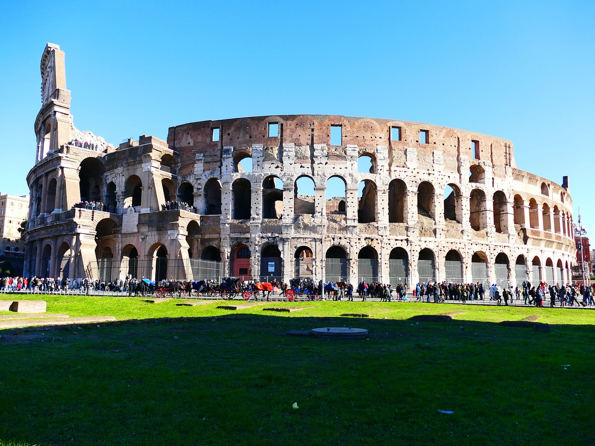
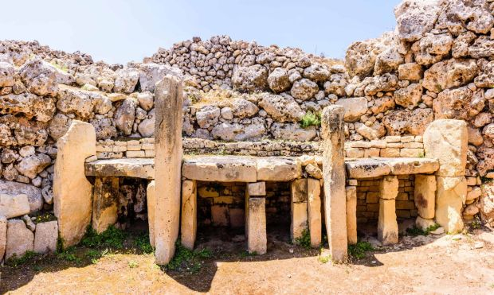

Historia największych budynków
Budownictwo dużych budynków ma długą i fascynującą historię. Zaczynając od starożytnych piramid, poprzez średniowieczne katedry, aż po nowoczesne wieżowce, każda era ma swoje wyjątkowe konstrukcje.

